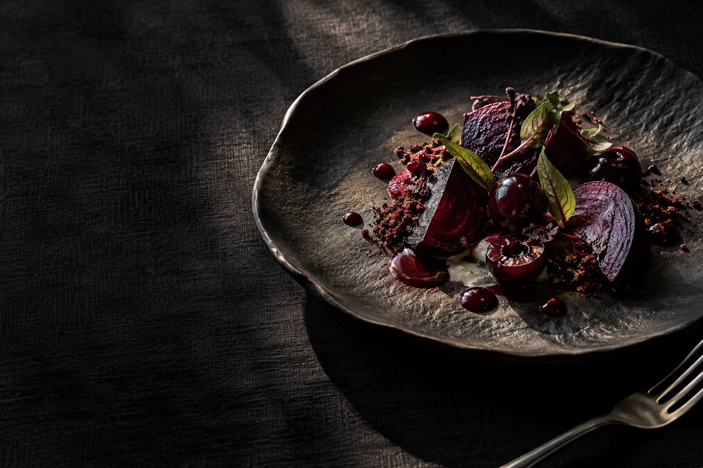
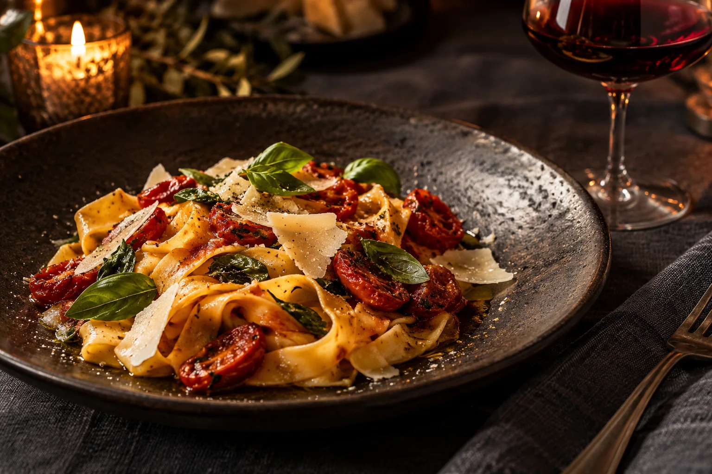
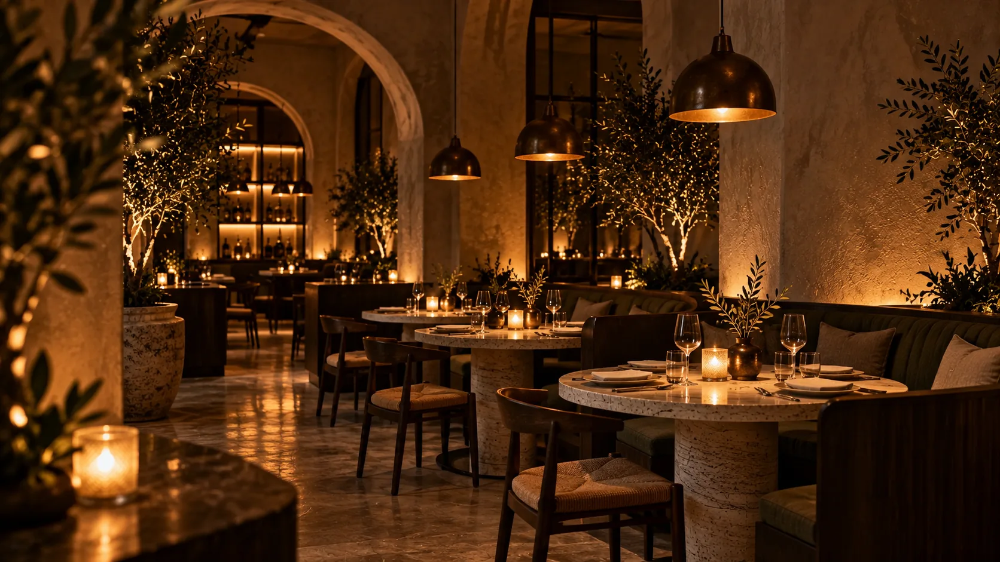
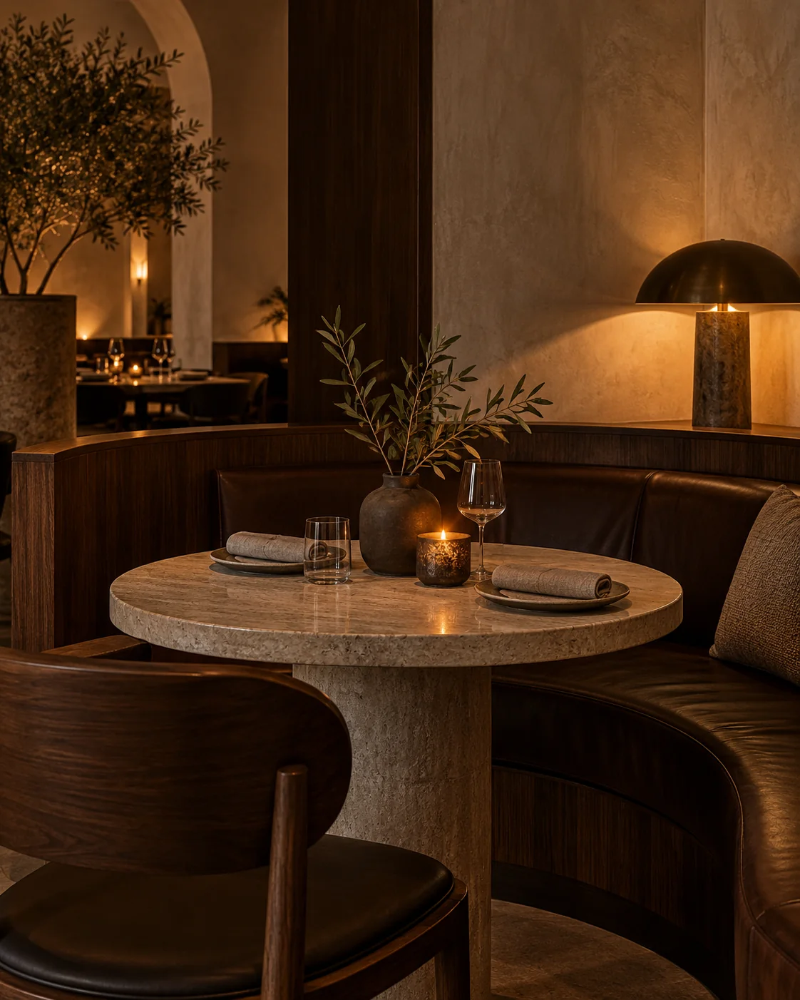

The room changes when the sun goes down.
At NocteA little less hurry.
A lot more night.
We cook with the season, pour another glass, and leave enough room for the conversation to find its way.
Come inside
Seasonal food. A room made for staying. Your evening starts here.
The room changes when the sun goes down.
At NocteWe cook with the season, pour another glass, and leave enough room for the conversation to find its way.
Come inside
Our menu follows what tastes best right now. Familiar ingredients, open fire, and just enough surprise.
Explore the menuGood evenings are never measured in hours.
Low light. Warm tables. The feeling that there is nowhere else you need to be.

